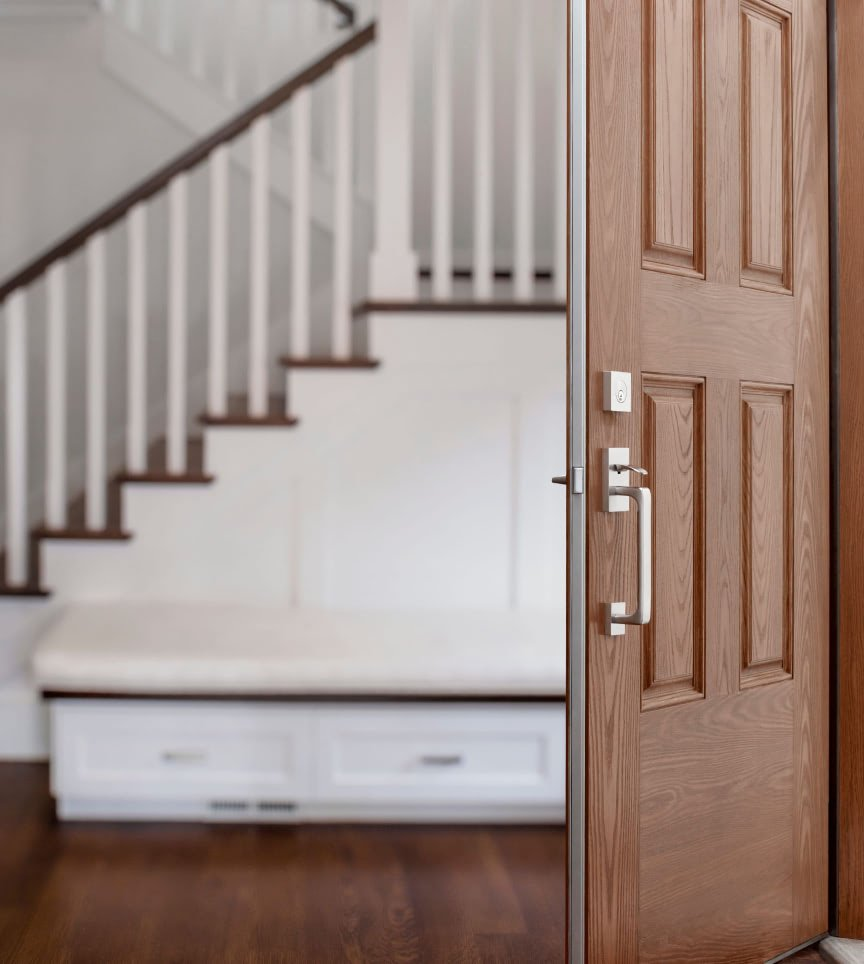
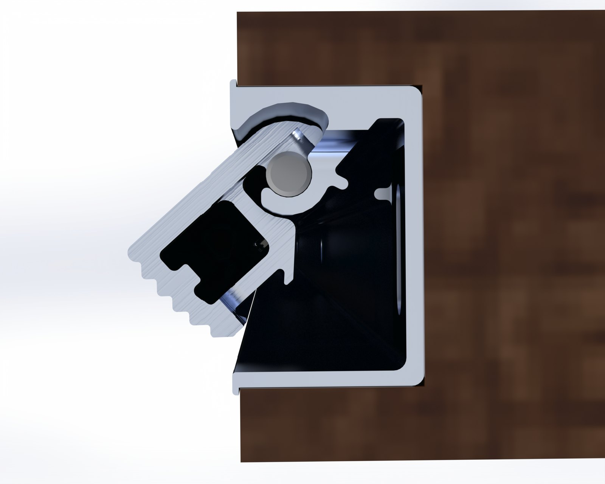
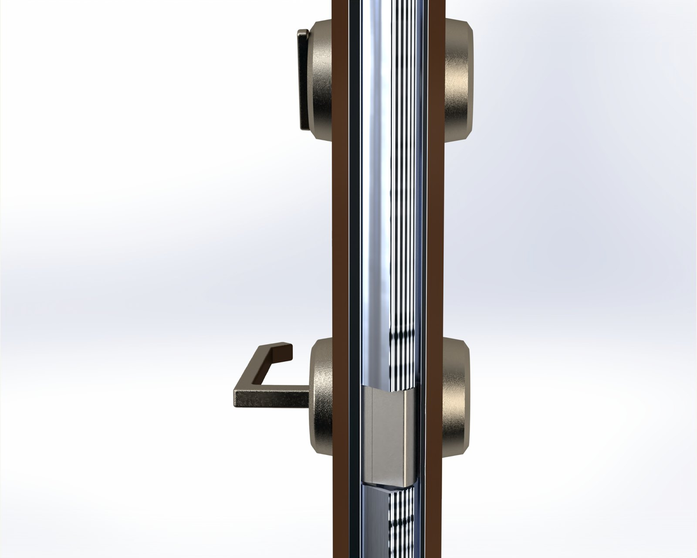
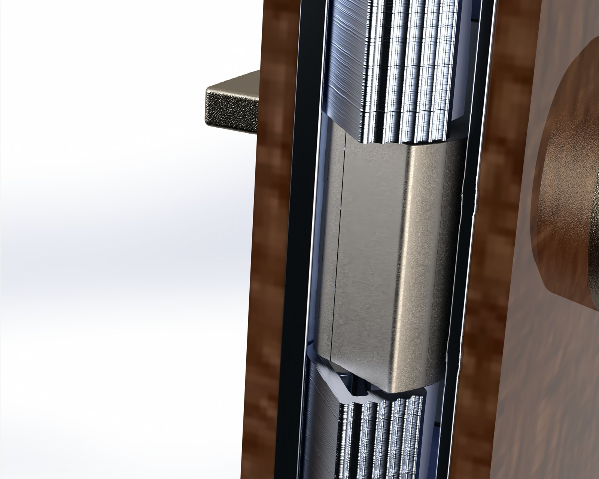
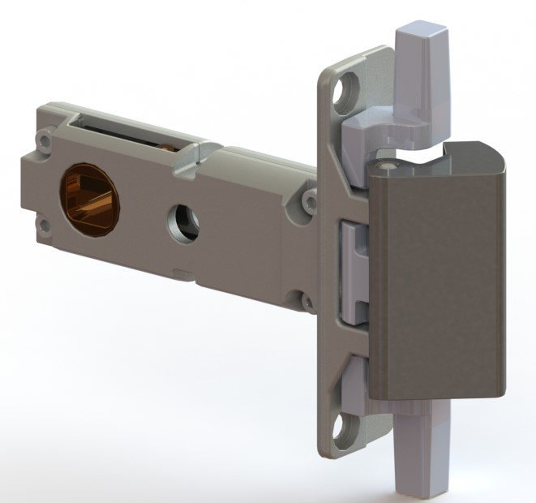
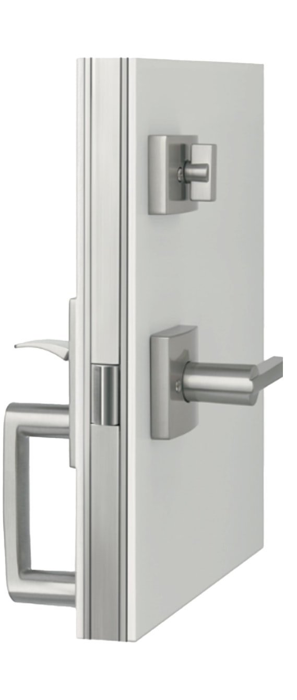
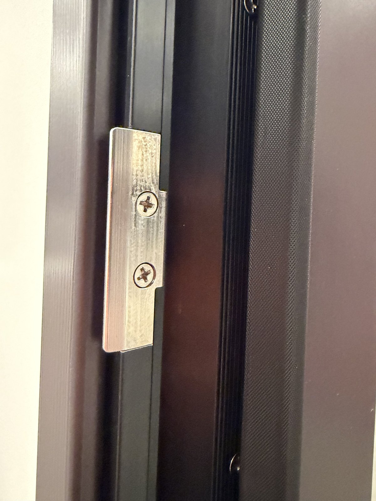
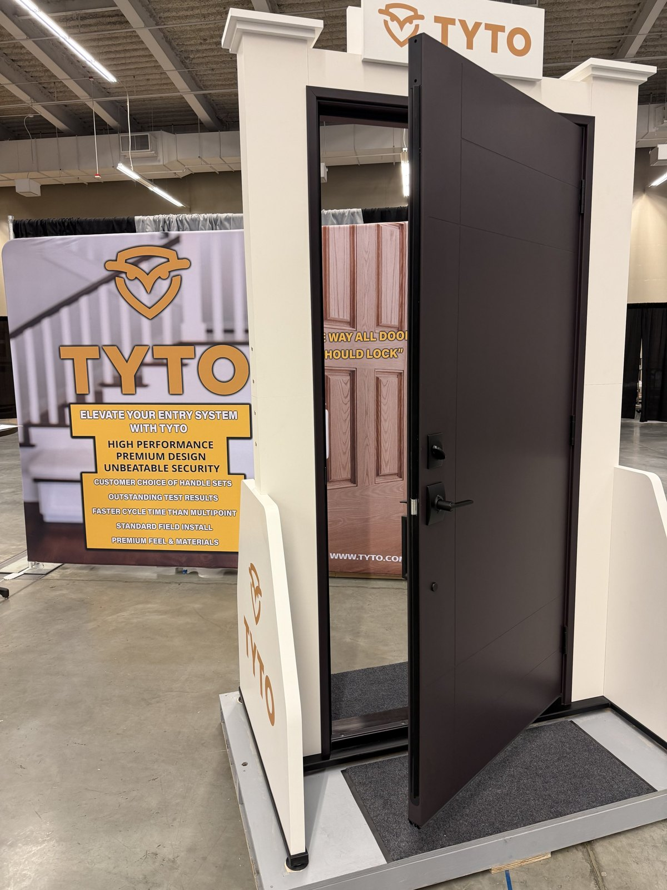

WedgeTLS, 2020 to present · Design engineer, deadbolt design and testing
A door lock that grabs the whole edge of the door. I've been a design engineer on it at WedgeTLS since 2020. I designed the deadbolt, and I own all of the testing.

| Product | Continuous locking system for residential entry doors |
|---|---|
| Fits | Standard frames and wood-edge slabs, 71 or 90 inch tall, with a standard dual bore |
| Materials | Anodized aluminum edge and jamb in black or clear, polished steel, a dual-spring latch |
| Tools | SolidWorks for CAD, Arduino and Python for the test rigs, Photoshop and Illustrator for visuals |
| Durability target | Grade A, the top residential durability rating from BHMA: 400,000 cycles |
TL;DR. Most front doors are held shut by one little bolt. Tyto runs a metal strip down the edge of the door and a matching one down the frame, and locking it hooks the two together top to bottom, so the door becomes a wall when locked. It works with any regular door lockset, high end, electronic, or a standard from a hardware store.
A deadbolt holds the door at one point, so a kick only has to break that single point. A storm will still find every crack on the side and pour right through. Multipoint locks spread the load out. They're also fussy to install, and they never feel great to use. Plus they're super confusing. Anything new has to last for years and fit the doors and handles already out there as well.
An aluminum profile runs down the door edge and a matching one sits in the jamb. Using a regular standard handle, you turn the lockset and with the same force as a deadbolt - the two profiles lock together along their whole length. So a hit on the door spreads across the full length. The wind of a hurricane is spread along a full length of the door, rather than one single location. Both profiles are closed box sections. That keeps a tall 8 foot door from warping, forcing it to stay straight and strong.



We designed our own latch that fits with the vast majority of handlesets. Every handleset brand feels a little different, and normally comes with their own latch. In order to keep the strong high quality feel of the product, the latch comes standard. It's beautifully polished and has a consistent strong feeling to keep your door closed securely - but isn't harder to open than a generic latch.

Hardware goes on at a prehang shop, so Tyto wanted it to be easy to install, and fast with ordinary shop tolerances. It goes in quicker than a multipoint and needs less precision. It takes standard handlesets from the big brands, and the homeowner still picks the style and finish.
We kept visible screws on the edge to a minimum. We even tuned the sound of the door closing.


For security, full doors go through the industry's forced entry and impact tests, plus air and water tests for coastal and high wind areas. The BHMA standards for residential locks, A156.40 for deadbolts and A156.39 for locksets and latches, have their own test descriptions.
Durability is measured in cycles. One cycle is the door unlocking and opening, then closing and locking again. Grade A asks for 400,000 of them, and parts of the test can't run faster than 30 a minute, so one run takes over nine days. It's important to verify in house both to make sure we meet standards, but also that we are able to prototype test. As a result, we built a full cycler in-house. However, the standards only require that the lock meets them - it doesn't tell you how it fails, when it fails, or anything else.
A custom built robot for exactly this purpose was designed and constructed to accomplish these goals. A full door stands in a regular house frame, connected with standard 20-20 aluminum extrusions. These created a strong frame for two stepper motors, impersonating a human being opening either the latch or locking the door. Then an actuator opens and closes the door, confirming the full purpose of a door.
That rig later grew into a bench station that judges the individual hardware from torque alone. It has its own write-up in Deadbolt and Latch Validation.
